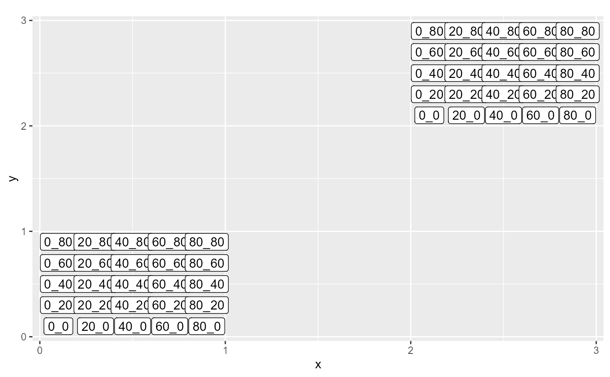

Check the order of subplots in a given data frame
test.order.subplot.RdThis function checks the order of subplots in a given data frame against a predefined order. It also checks if there are any missing or too much subplots. If there is any issue, it plots the mean of the indicator variable 'tag' for each subplot and displays it in a spatial plot to see where the errors from thanks to an indicator 'check.
Value
The function returns a message indicating if the order of subplots in the data frame is correct or if there is a problem with the order. If there is any issue, it plots the errors.
Examples
## Test 1
# Define the data for 2 plots
df <- data.frame(plot_name = c(rep("plot1", each = 250),rep("plot2", each = 250)),
sous_plot_name = rep(c("0_0","20_0","40_0","60_0","80_0",
"80_20","60_20", "40_20","20_20","0_20",
"0_40","20_40","40_40","60_40","80_40",
"80_60","60_60","40_60","20_60","0_60",
"0_80","20_80","40_80","60_80","80_80"),
each = 10),
tag = c(1:250, 1:50, 76:100, 51:75, 101:250))
# Define the 2 plots geometry
square1 <- st_polygon(list(rbind(c(0,0), c(0,1), c(1,1), c(1,0), c(0,0))))
square2 <- st_polygon(list(rbind(c(2,2), c(2,3), c(3,3), c(3,2), c(2,2))))
# Define the size of the subplot sides
n <- 5
side_length <- 1/n
# Define the subplot geometries
for (j in c(0,2)){
for (x in 1:n){
for (i in 1:n){
tmp <- st_polygon(
list(
rbind(
c(j+(i-1)*side_length,j+(x-1)*side_length),
c(j+(i-1)*side_length,j+x*side_length),
c(j+i*side_length,j+x*side_length),
c(j+i*side_length,j+(x-1)*side_length),
c(j+(i-1)*side_length,j+(x-1)*side_length)
)
)
)
if(j == 0){assign (paste('smaller_square1',x,i, sep = "_"), tmp)}
else{assign (paste('smaller_square2',x,i, sep = "_"), tmp)}
}
}
}
# Define the predefinite order of subplots
order <- c("0_0",
"20_0",
"40_0",
"60_0",
"80_0",
"0_20",
"20_20",
"40_20",
"60_20",
"80_20",
"0_40",
"20_40",
"40_40",
"60_40",
"80_40",
"0_60",
"20_60",
"40_60",
"60_60",
"80_60",
"0_80",
"20_80",
"40_80",
"60_80",
"80_80")
# Assign names to geometries
sub_plot <- st_sf(
plot_name = rep(c("plot1","plot2"),each = 25),
sous_plot_name = rep(order,2),
geometry = st_sfc(lapply(1:25,function(x) st_geometrycollection()))
)
#> Warning: row names were found from a short variable and have been discarded
for (j in 1:25) {sub_plot$geometry[j] <- mget(ls(pattern = "smaller_square1"))[[j]]}
for (j in 1:25) {sub_plot$geometry[j+25] <- mget(ls(pattern = "smaller_square2"))[[j]]}
rm(list=ls(pattern = "smaller_square1"))
rm(list=ls(pattern = "smaller_square2"))
# Plot
ggplot(sub_plot) +
#geom_sf() +
scale_fill_continuous(type = 'viridis')+
geom_sf_label(aes(label = as.character(sous_plot_name))) +
ggtitle(paste(unique(tmp$plot_name)))

# Check the order of subplots
test.order.subplot(df, sub_plot)
#> Error in group_by(., plot_name, quadrat): Must group by variables found in `.data`.
#> ✖ Column `quadrat` is not found.
## Test 2
library(plotsdatabase)
# Extract datas
x <- query_plots(locality_name = "Mbalmayo", extract_individuals = TRUE, show_all_coordinates = TRUE)
#> Error in get_password_secure("Enter database password: "): Cannot prompt for password in non-interactive session. Please provide password parameter.
coordinates_sf <- x$coordinates_sf
#> Error in x$coordinates_sf: $ operator is invalid for atomic vectors
ind.extract <- x$extract
#> Error in x$extract: $ operator is invalid for atomic vectors
sub_plot <- divid_plot(coordinates_sf,'plot_name')
#> Error in divid_plot(coordinates_sf, "plot_name"): unused argument ("plot_name")
test.order.subplot(ind.extract, sub_plot)
#> Error: object 'ind.extract' not found